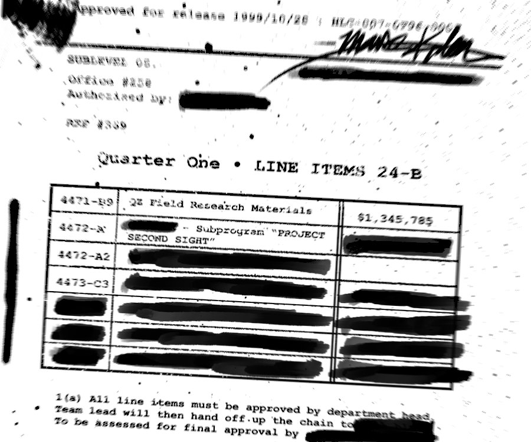

SL
NobleWatchTim
Member
Joined: 1998
Posts: 198
Posts: 198
As usual, I filed a routine FOIA request on some early 90's black budget projects that I was curious about. Mostly line items and amounts that were spent in that era. I received to my surprise and answer, of course with heavy redactions but one subprogram name caught my eye. Has anyone else heard of this or seen any other projects reference it? See Line item 4472-A "SUBPROGRAM PROJECT SECOND SIGHT".

The parent program is redacted along with figure amount and 4472-A has it's figure amount redacted as well. Seems like it was meant to be redacted and they made a mistake, which is not usually the case. Maybe someone inside wanted this name to get out?